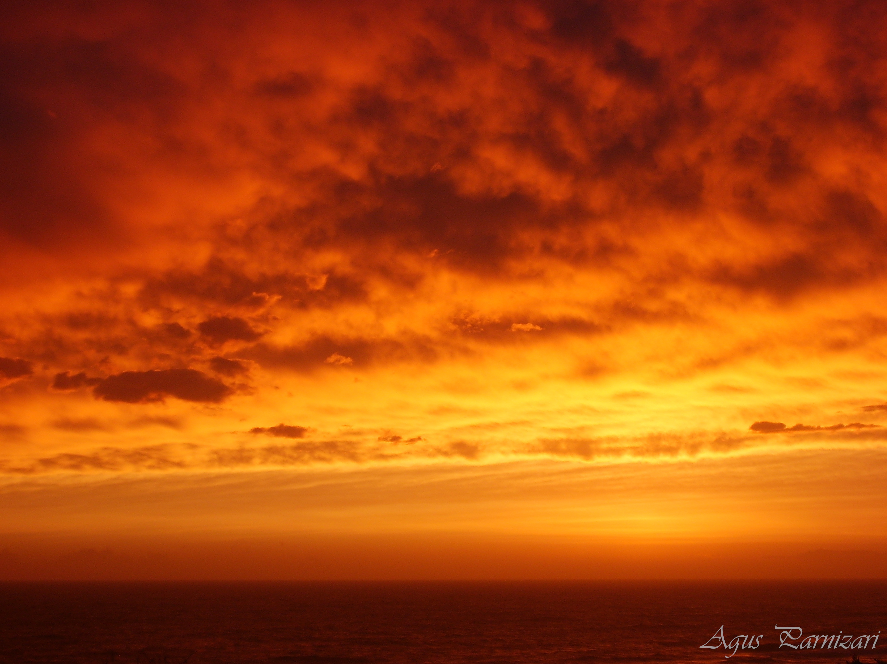

Acerca de mi
¡Hola! Mi nombre es Agustina Parnizari, soy una fotografa amateur que desde hace unos años dedica su tiempo libre a la fotografía.
Hace un poco más de una década me regalaron mi primera cámara de fotos, una Samsung compacta que utilizaba para capturar momentos con amigos y familia. Un día de tormenta en La Floresta (Uruguay), en las vacaciones de verano, capturé la primer imagen que me hizo interesarme en el tema; pueden ver esa imagen en el inicio de esta página.
Luego de eso realicé algunos cursos en la EUF (Escuela Uruguaya de Fotografía y Video) donde me enseñaron los principios básicos; luego seguí mi aprendizaje autodidacta en sitios como por ejemplo "Blog del Fotografo". Mi experiencia fue bastante intermitente debido a mis estudios, lo cual me dejaba poco tiempo para practicar, aprender o simplemente salir a fotografiar. Sin embargo, en esa etapa me regalaron mi primera cámara analógica, una Olympus OM2n, lo cual me hizo acercarme nuevamente a la fotografía, estudiando revelado en "Fotoclub Uruguayo". Cuando terminé mis estudios, decidí volver con más fuerza a la fotografía, aprendiendo, leyendo, consumiendo contenido en redes sociales y la web, intentando mejorar e imprimiendo o copiando mis imágenes.
El objetivo de esta página es registrar parte de ese proceso: busco simplemente poder visualizar y mostrar el contenido que me motiva, amigarme con el proceso de edición fotográfica y, si es posible, ayudar a otras personas. Por otra parte, el blog de esta página no pretende enseñar fotografía sino contar, a modo de bitácora, mi experiencia o algunos procedimientos que realizo. Quizás el compartir mi aprendizaje puede ayudar a otros en su proceso.
Te invito a recorrer mis galerías, que separé en digital y química (más conocida como analógica, aunque no sea su mejor definición, como nos cuentan en ThinkBig).
Gracias por visitar mi sitio y no dudes en contactarme si así lo deseas.
Agus